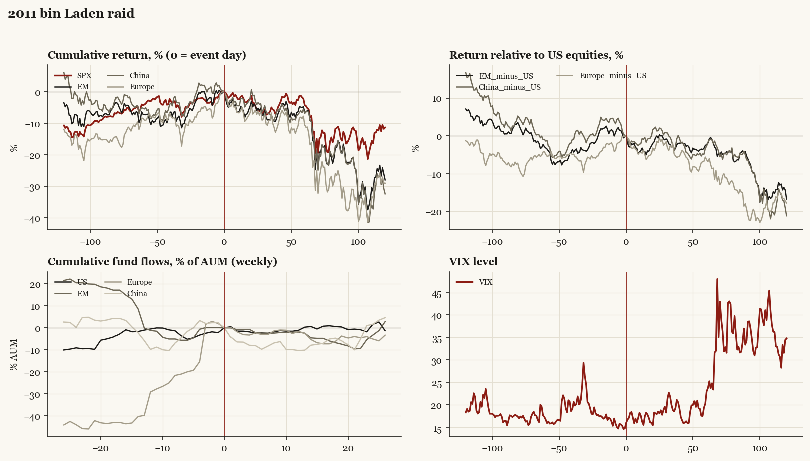

2011 bin Laden raid
Obama administration. Outbreak/event 2011-05-02, no buildup window. Surprise; type: one_off.

What moved
- Equities ran +4.1% over the 60 trading days into the event.
- The S&P 500 moved -4.2% over the following 60 trading days and -11.3% over 120.
- Cumulative net flows into US equity funds: +0.3% of assets in the 13 weeks after (vs +1.0% in the 13 weeks before).
- Cumulative net flows into emerging-market funds: -2.4% of assets in the 13 weeks after (vs +0.1% in the 13 weeks before).
- Cumulative net flows into Europe funds: -2.5% of assets in the 13 weeks after (vs +39.8% in the 13 weeks before).
- Cumulative net flows into China funds: -10.2% of assets in the 13 weeks after (vs +5.8% in the 13 weeks before).
- Implied volatility moved +1.9 VIX points across the event (from 14.8).
- Announced Sunday night 05-01 ET
Detail
| series |
runup pre-60d |
+20d |
+60d |
+120d |
| SPX |
+4.1% |
-1.2% |
-4.2% |
-11.3% |
| US |
+4.1% |
-1.0% |
-4.2% |
-11.3% |
| EM |
+7.3% |
-3.0% |
-6.5% |
-28.0% |
| China |
+5.4% |
+0.7% |
-6.9% |
-32.5% |
| Taiwan |
-0.0% |
-1.1% |
-4.0% |
-25.6% |
| Europe |
+9.0% |
-4.2% |
-10.5% |
-29.1% |
| Japan |
-7.2% |
-2.8% |
+1.1% |
-10.7% |
| Bonds |
+2.6% |
+2.3% |
+2.1% |
+10.6% |
| Gold |
+13.0% |
-0.5% |
+4.5% |
+4.9% |